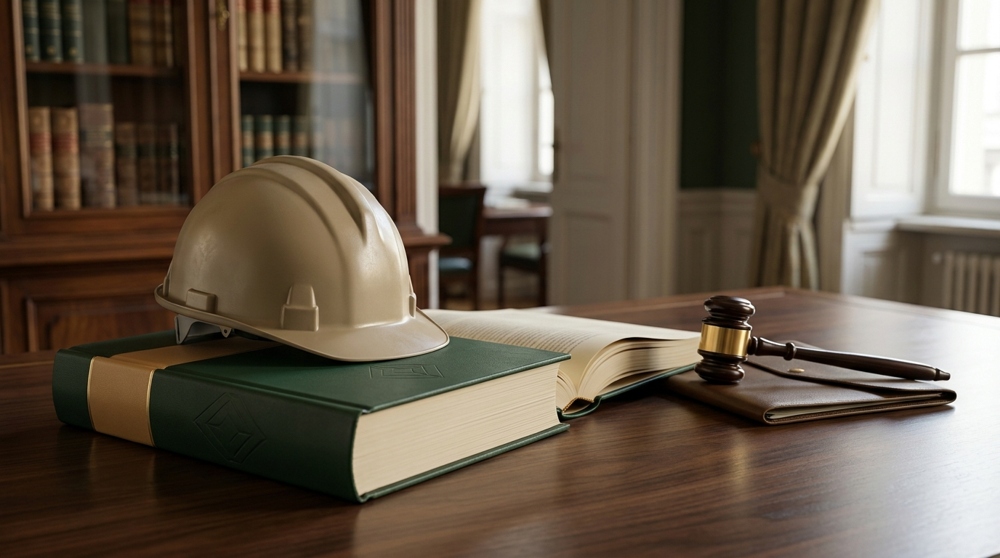

Omicidio sul lavoro: il DDL che inasprisce le pene
Secondo le notizie relative al disegno di legge in discussione alla Camera dei Deputati, le sanzioni penali per l'omicidio e le lesioni gravi commessi in violazione delle norme antinfortunistiche potrebbero diventare più severe. Il testo non è ancora legge vigente, ma anticipa un cambio di passo sulla responsabilità penale del datore di lavoro. Vediamo perché conta già oggi.

Il fatto
È in esame alla Camera dei Deputati un disegno di legge che, secondo le notizie di stampa, intende inasprire le pene per i reati di omicidio e lesioni gravi o gravissime commessi sul luogo di lavoro in violazione delle norme di prevenzione. L'identificativo dell'atto e l'esatto perimetro sanzionatorio dovranno essere confermati dal testo definitivo: l'iter parlamentare è in corso e cornici, soglie di pena e perimetro dei reati potranno mutare.
È quindi prudente leggere questa proposta non come un dato già acquisito, ma come un segnale di direzione. Anche da un testo in discussione si può capire dove si stia spostando l'attenzione del legislatore.
Inquadramento normativo
Il quadro vigente già prevede aggravanti specifiche. L'art. 589 del codice penale (omicidio colposo) e l'art. 590 (lesioni colpose) contemplano un trattamento sanzionatorio più severo quando il fatto è commesso con violazione delle norme per la prevenzione degli infortuni sul lavoro. La numerazione interna dei commi è stata più volte rimaneggiata negli anni, anche per effetto dell'introduzione dell'omicidio stradale: la collocazione esatta dell'aggravante va quindi verificata sul testo aggiornato del codice, ma il principio è consolidato.
Il riferimento sostanziale resta il D.lgs. 81/2008 (Testo Unico Sicurezza). È questa la fonte che definisce la posizione di garanzia del datore di lavoro, cioè l'obbligo giuridico di attivarsi per impedire l'evento dannoso. Rilevano in particolare l'art. 16 sulla delega di funzioni (lo strumento con cui il datore può trasferire poteri e responsabilità a un soggetto idoneo, entro precisi requisiti) e gli artt. 28-29 sul Documento di Valutazione dei Rischi (DVR), l'atto in cui l'azienda mappa i pericoli e individua le misure di prevenzione.
Va poi richiamato il D.lgs. 231/2001, che disciplina la responsabilità amministrativa dell'ente: dall'infortunio non deriva solo la responsabilità penale della persona fisica, ma anche una possibile sanzione a carico della società, fino all'interdizione dall'attività.
Implicazioni pratiche
Un eventuale aumento delle pene non modifica da solo i criteri con cui si accerta la responsabilità. Cambia però il rischio penale concreto e, di riflesso, il peso delle scelte organizzative compiute prima dell'infortunio.
In questa materia la responsabilità si costruisce sulla documentazione. Un modello che esiste solo sulla carta non protegge: ciò che conta è la coerenza tra ciò che è scritto, ciò che è stato fatto e ciò che è dimostrabile. In giudizio, di fatto, ciò che non è documentato non esiste.
Per il datore di lavoro questo significa che il DVR aggiornato, la delega di funzioni formalmente corretta, i corsi di formazione tracciati e la manutenzione degli impianti documentata non sono adempimenti burocratici. Sono gli elementi su cui si misura la diligenza dell'organizzazione e, nel caso peggiore, la linea difensiva.
La direzione segnalata dal DDL rende ancora meno tollerabile il ritardo: rivedere oggi l'assetto della sicurezza costa meno che subirne le conseguenze dopo un evento.
Cosa fare in concreto
- Aggiornare il DVR e verificarne la coerenza con i processi realmente in essere, non con quelli sulla carta.
- Controllare la delega di funzioni: accertarsi che rispetti i requisiti dell'art. 16 D.lgs. 81/2008 (forma scritta, idoneità del delegato, autonomia di spesa, accettazione).
- Tracciare formazione e addestramento del personale, conservando attestati, registri e date.
- Documentare manutenzioni e controlli su macchinari e dispositivi di protezione, con evidenza datata.
- Verificare il modello organizzativo 231, se adottato, per allinearlo all'evoluzione normativa e alla concreta operatività aziendale.
È opportuno affrontare la materia con un approccio preventivo e non emergenziale: l'organizzazione della sicurezza si valuta su ciò che è stato predisposto prima dell'evento, non sulle giustificazioni successive.
Disclaimer
Contributo informativo a cura di Tamburro & Partners - Avv. Giuseppe Tamburro. Non costituisce parere legale.
Ogni storia di lavoro ha i suoi tempi.
Se gestisci HR e vuoi un confronto su contenzioso, ispezioni o licenziamenti, scrivi allo studio. Ti rispondiamo entro un giorno lavorativo.